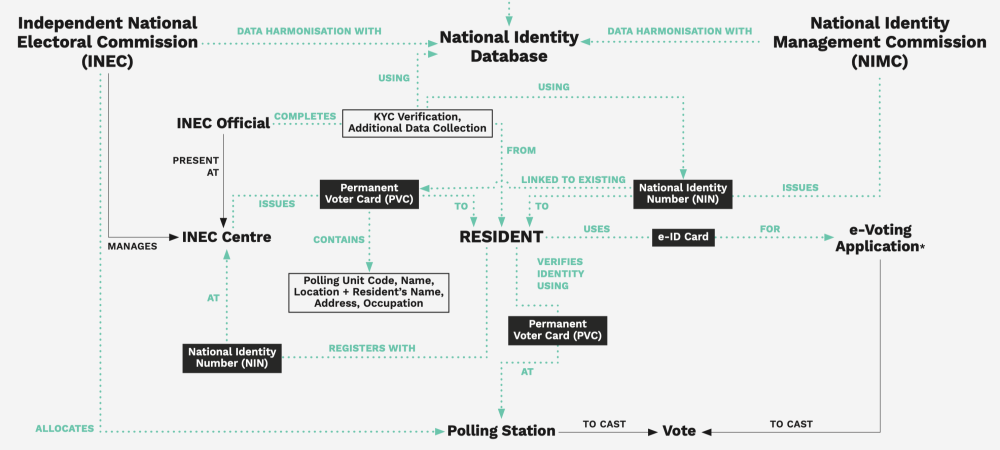
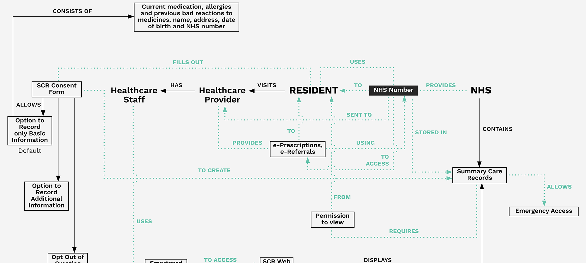
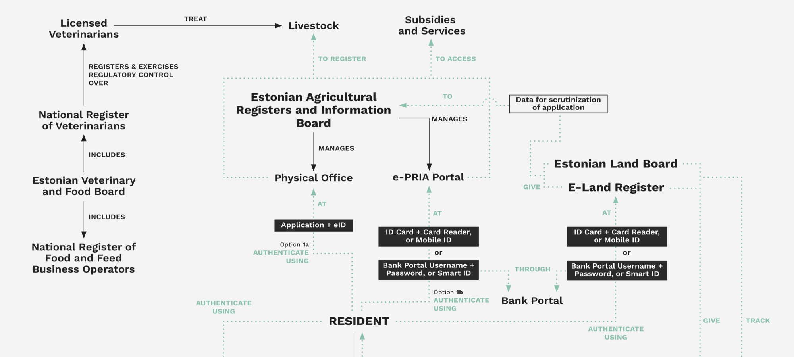
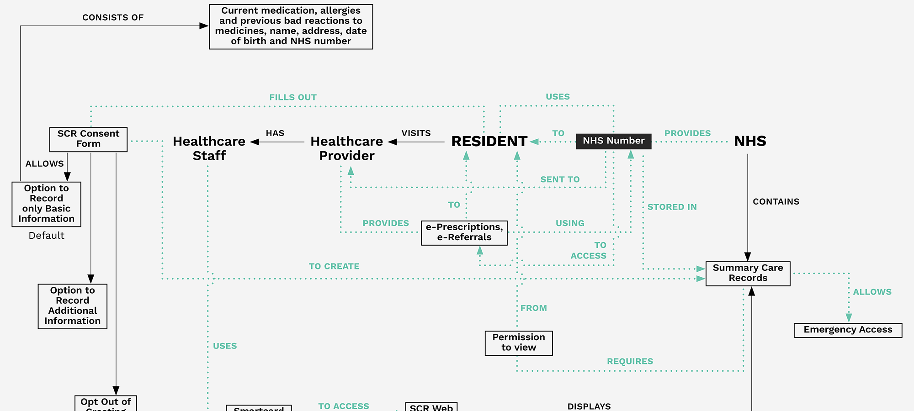
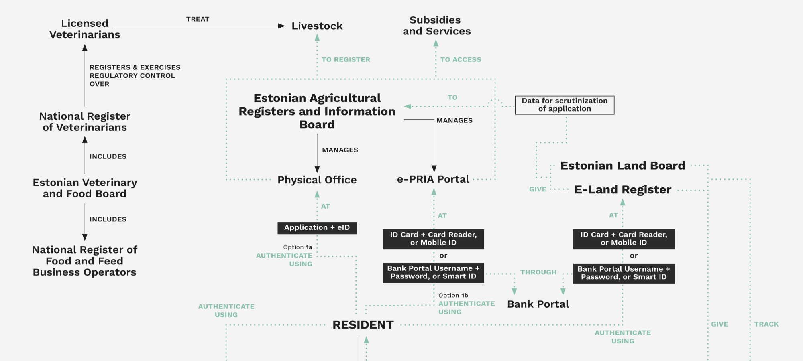
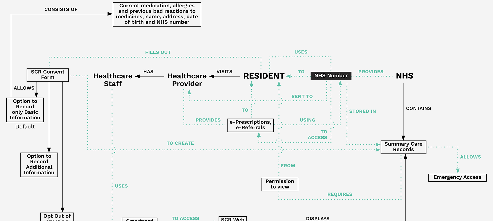
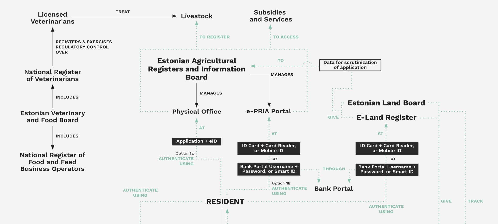
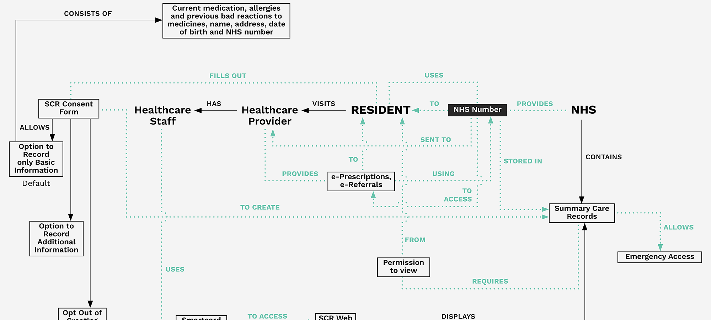
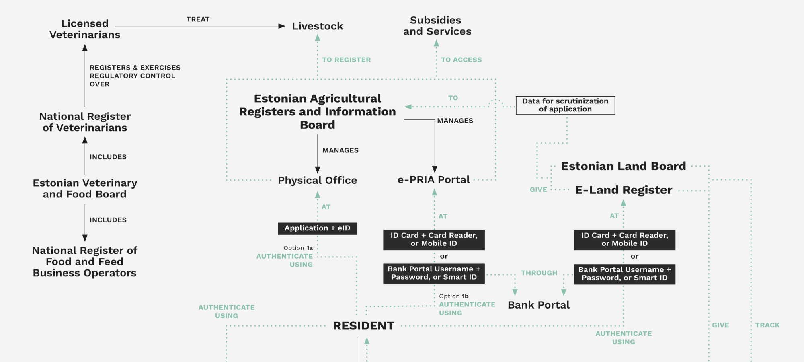

Exploratory Research Maps
Exploratory Research Maps are a result of our global survey of digital identity systems. Read together with the glossary of core concepts and processes, these maps provide a coherent view of digital identity in one country. They shine a light on the pervasiveness of digital identity, as well as dissect digital identity systems in a way that brings attention to the actions of key stakeholders, and to kinds of data and how they are shared. Designed as stepping stones to further research, the maps facilitate the identification of points of accountability and intervention.
Mapping Digital ID Systems: Nigeria • India • United Kingdom • Estonia

 



 


